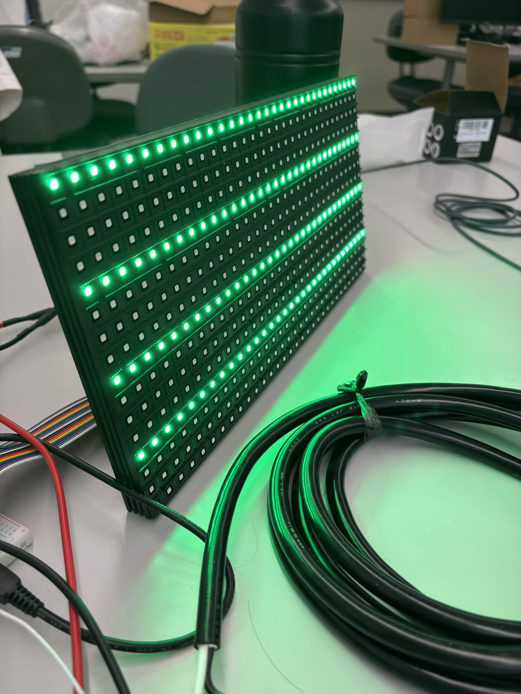
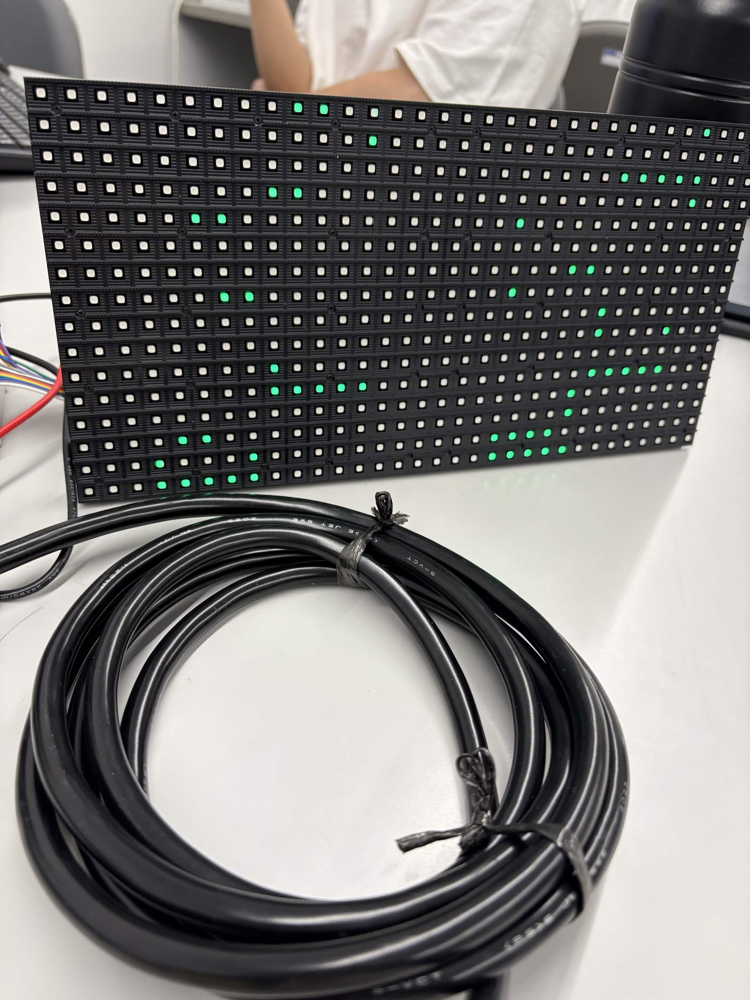
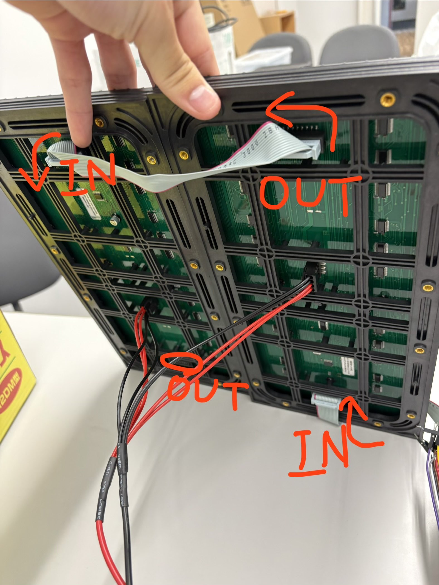
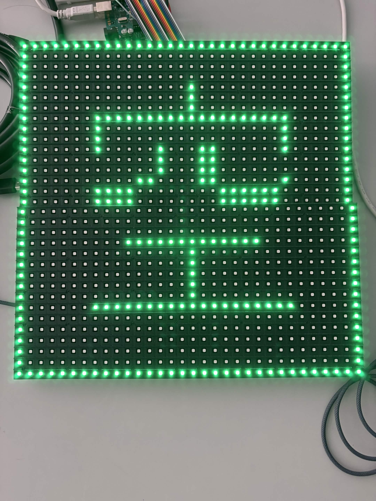
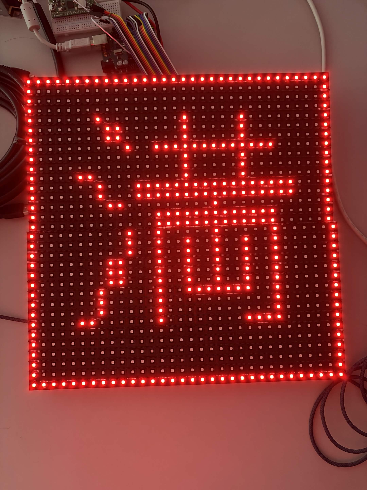

Arduino Uno R3でP10 LEDを光らせた話
Arduino Uno R3を使ってP10LEDを光らせるために頑張った話を書いていきます．
Arduino Uno R3と2枚のLEDパネル
- 物理パネル: 32×16・1/4 scan 2枚
- 配置: 上下2枚で論理32×32
- 信号経路: Arduino Uno R3 → 下段IN → 下段OUT → 上段IN
- シフト数: 64クロック/枚、合計128クロック/アドレス
1. 最初はPico Wで動かそうとした
最初は手元にPicoがあったのでCircuitPythonのrgbmatrixを使って動かそうとしました．
が，知識がなくAIと相談してもうまくいかなかったので断念．
しかし，自分が唯一触れたことのあるArduinoがあったのでそっちを使うことにしました．
2. Arduinoを使って遂に光る...か？
Arduinoならライブラリを入れて，配線して，サンプルコードを書き込めば光ると思っていました．

最初はAdafruit RGBmatrixPanelを使っていました．コンパイルも通るし，Arduinoにも書き込める．しかし表示されたのは，図形が分裂してぐちゃぐちゃになったり，縦線だけしか表示されなかったり，よく分からないブロックが並んだりする状態でした．
最初は配線ミスかと思い，A/B/C/Dの線を入れ替えたり，差し込みなおしたり...
WIDTHやHEIGHTを変えたりしましたが，何をしてもまともな形になりませんでした．
調べていくと，今回のパネルは一般的な32×16の1/8 scanではなく，P10という1/4 scanのパネルでした．見た目は同じようなLEDパネルでも，中でどう行を選んでいるかが違うらしいです．
つまり，ライブラリが想定しているパネルと，自分のパネルがそもそも合っていませんでした．
3. ライブラリをあきらめて直接制御する
最終的には，標準ライブラリを使わずにArduino Unoのポートを直接操作するプログラムを作ることにしました．
Arduino Uno R3はメモリが少ないし本当にできるのか不安でした．それでもRGBの信号，CLK，LAT，OE，A/Bを順番に動かしていくと，まず32×16のパネル1枚で色が出ました．
このとき，論理上は横32ドットなのに，32回クロックを送ればよいわけではありませんでした．このP10パネルは内部が8ドット単位で少し特殊に並んでいて，1枚につき64クロック必要でした．
32×16のパネルを2枚つなぐので，最終的には1アドレスごとに128クロック送ることになりました．
4. 文字より座標テストのほうが大事だった
最初は「空」の文字を出そうとしていました．しかし文字が崩れると，フォントが悪いのか，左右反転しているのか，走査方式が間違っているのか，全く分かりませんでした．

そこで文字を一度やめて，上端を赤，下端を青，左端を緑，右端を白にするテスト表示を作りました．真ん中には紫の四角を置いて，四隅にも違う色を置きました．
これを表示すると，上下左右の反転や，中央が分裂している問題が見つけやすくなりました．円のような左右対称の図形だと，反転していても気付きにくいです．

文字を表示したいときほど，最初は文字を使わないほうがいいと分かりました．
5. 2枚つなぐと，表示の順番が逆になる
今回の配線は，Arduinoから下段パネルのINに入り，下段のOUTから上段のINへつないでいます．

数珠つなぎなので，先に送った64クロック分のデータは奥にある上段パネルへ流れていきます．後半の64クロック分が，下段パネルに残ります．
ここを逆に考えていたので，上下が入れ替わったり，文字が変な位置に出たりしました．
さらに，2枚のパネルは取り付け方向も同じではありませんでした．上段は上下反転が必要で，下段は左右反転が必要でした．画面全体を反転するだけでは直らず，パネルごとに補正を分ける必要がありました．
少しずつ設定を変えて，赤が上，青が下，紫が中央に戻ったときはかなり嬉しかったです．
6. 「32×32」でもD線を使うとは限らない
32×32と聞くと，A/B/C/Dの4本で16行を選ぶ1/16 scanを想像していました．実際，途中ではD線もつないで試していました．
しかし今回は，32×16・1/4 scanのパネルを2枚重ねて32×32にしているだけです．各パネルの行選択はA/Bだけで，C/Dは使いません．
見た目のサイズだけで判断すると間違えることがある，というのも今回学んだことです．
7. 最後に文字を表示する
座標が正しく表示できるようになってから，やっと文字を載せることができました．
最初は自分で作った簡単な字形を拡大していましたが，「空」が少し平たく見えました．そこでGNU Unifont-JPの16×16フォントを使い，32×32の中で1.5倍の24×24になるように表示しました．
Arduino UnoはSRAMが2048 byteしかありません．32×32の画面を持つだけで1024 byte使うので，フォントはPROGMEMに置いて，色は8色に絞りました．
最終的に，緑色の「空」と赤色の「満」を表示できました．


8. 最終的に動いた構成
最終的には，Arduino Uno R3から32×16・1/4 scanのP10パネル2枚を制御して，32×32の表示を作ることができました．
最初は「Arduinoならすぐ光る」と思っていましたが，実際にはパネルの走査方式，内部の並び方，接続順，パネルごとの向き，フォント，Arduinoのメモリなど，いろいろな要素が重なっていました．
今回一番大事だったのは，何となく全部を変えないことでした．
配線，走査方式，表示内容を一気に変えると原因が分からなくなります．まず1枚，次に単色，次に座標テスト，最後に文字，という順番で進めたことで，少しずつ動くところまでたどり着けました．
まだLEDパネルについては分からないことだらけですが，とりあえずArduino Uno R3でP10 LEDを光らせることはできました．
そして次は，ESP32を使ったLED表示に挑戦します！
ばいちゃ！